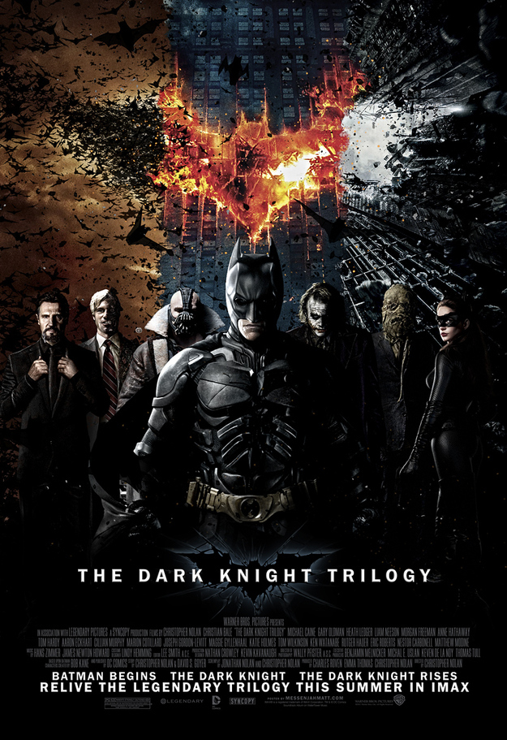

This series contains 3 movies 1.Batman Begins 2.Batman the dark knight 3.Batman the dark knight rises 
This series is everything you want to see and more.
An absolute masterpiece which dives into the world of wizards and witches